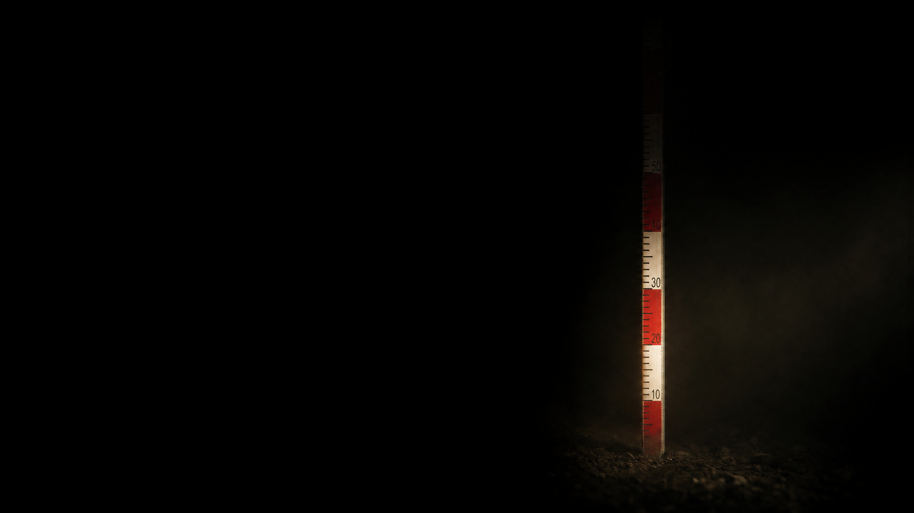

not the code.
the scatter.
the scatter.
same sensor, same led, same room. the difference is how far your readings move when nothing moves.
| team | alphabet | hit rate | what they did about noise |
|---|---|---|---|
| team 7 | 16 | 98 % | cardboard tube, fixed distance, averaged over 8 |
| team 2 | 8 | 96 % | longer integration time, shielded from the window |
| team 11 | 8 | 91 % | picked colours further apart |
| team 5 | 4 | 100 % | nothing, played it safe |
| team 14 | 4 | 82 % | nothing, and it still failed |
